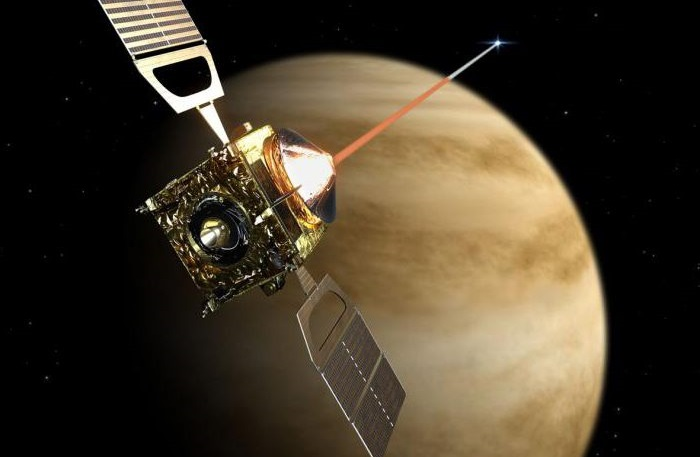
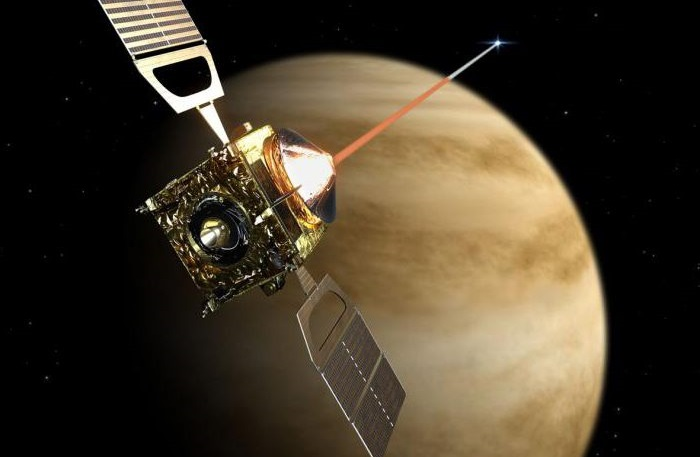
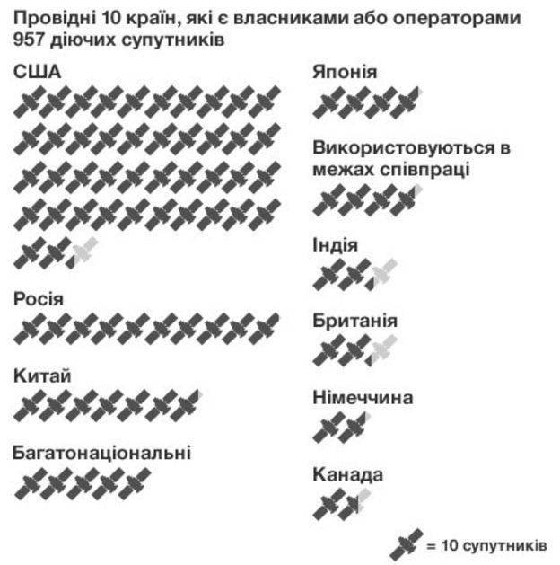
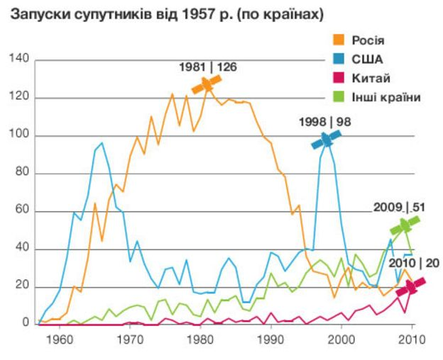
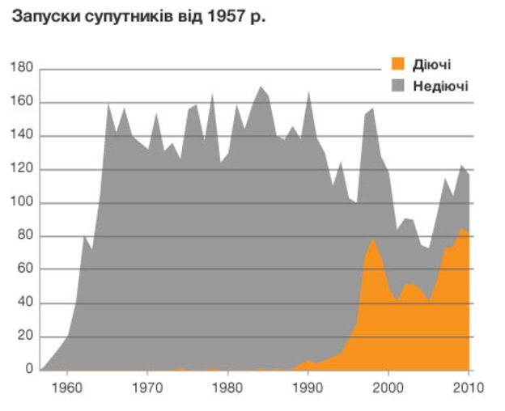
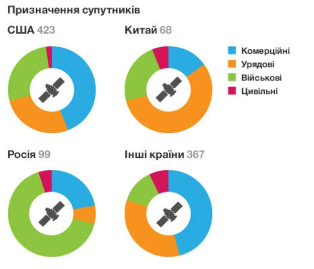
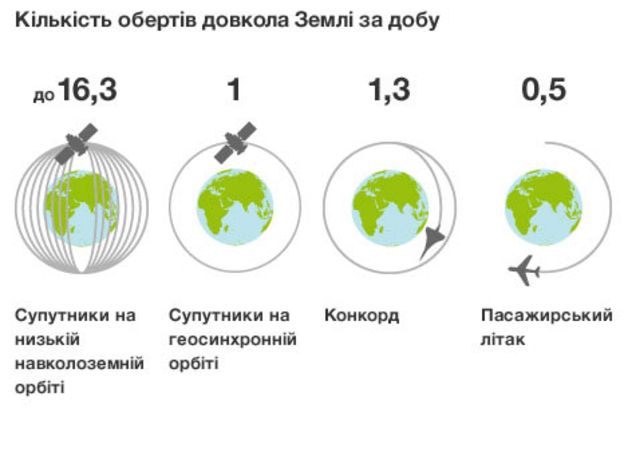

Штучні супутники
Перший супутник
Саме СРСР 4 жовтня 1957 року першим запустив у космічний простір найпростіший супутник землі або ПС-1 на ракетоносії Р-7, з космодрому Байконур. Очолював творчий колектив творців супутника Сергій Корольов.
Технічні характеристики в першого штучного супутника землі досить примітивні в порівнянні із супутниками, які запускаються в наш час.
ПС-1 представляв із себе кулю діаметром приблизно 58 сантиметрів, до якого були приєднано чотири антени довжиною 2,4 і 2,9 метра. Ці антени потрібні були для радіозв’язку. Маса ПС-1 була 83,6 кг. Усередині супутника перебували датчики тиску, температури, вентилятори охолодження, що включалися від реле, вони починали працювати, якщо температура піднімалася вище +30С, а також комутуюче обладнання, яке передавало сигнал від супутника на Землю.
ПС-1 відділився від ракетоносія через 295 секунд після старту, а вже через 315 секунд після старту він послав на землю перший радіосигнал, який міг приймати будь-який радіоаматор, це були повторювані протягом приблизно близько 2 хвилин сигнали: «Біп, Біп». Ці прості сигнали розпочали дослідження космосу космічними апаратами, почалася ера космонавтики й перегони озброєнь між СРСР і США.
ПС-1 пробув на еліптичній орбіті Землі 92 дні й виконав 1440 оборотів навколо планети. Космічний апарат продовжував передавати радіосигнал протягом 20 днів, після чого швидкість обертання ПС-1 почала знижуватися, і 4 січня 1957 року він згорів у щільних шарах атмосфери через високе тертя об повітря на великій швидкості.
Космічні технології

У наш час у космічному просторі є біля 13 тисяч штучних супутників Землі, більшість належить США, Росії, і Китаю. Технологія запусків супутників полягає в тому, щоб при запуску дати йому якнайбільшу швидкість. Потрапивши вже на еліптичну орбіту землі супутник зможе сам, за рахунок набраної швидкості тривалий час обертатися й передавати сигнали.
Зараз є багато видів супутників: зв’язку — супутники навігації, метеорологічні супутники, розвідувальні супутники, біосупутники, ці косчмічні апарати допомагають нам у звичайному житті.
Ми прогнозуємо погоду, прокладаємо нові маршрути, користуємося стільниковим зв’язком, супутниковим телебаченням, бездротовим інтернетом, становимо карти й реєструємо земельні ділянки в прив’язці до супутника, і все це завдяки штучним супутникам землі.
Вивчення космосу
 

Про штучні супутники Землі є багато цікавих фектів, але також безпілотні космічні апарати досліджують і інші планети. Так що крім супутників, які полегшують нам наше повсякденне життя, існують штучні супутників Місяця, Марса, Сонця, Венери.
Штучний супутник Місяця першим запустили вчені СРСР, цей супутник передавав фотографії поверхні місяця, за допомогою яких учені переконалися в її специфічній формі, довідалися її будову й особливості тяжіння.
Штучний супутник Марса — одночасно цю планету почали вивчати три супутники, два радянські й один американський.
У всії цих супутників стояли різні завдання, одні фотографували поверхню планети, інші вивчали температуру, рельєф, форму планети, наявність води, але варто відзначити, що першим штучним супутником який здійснив м’яку посадку на поверхню цієї планети був радянський супутник Марс-3.
Перший штучний супутник біля Сонця, з’явився тоді, коли його зовсім туди не збиралися запускати. Супутник НАСА який повинен був досліджувати місячну поверхню, перелетів орбіту місяця й зупинився на орбіті сонця. У Росії так само є своєї штучний супутник сонця, який вивчає солену активність і передає геомагнітні спалахи й коливання.
Штучні супутники Венери. Радянський Союз першим відправили в 1975 році штучний супутник, за допомогою якого отримали зображення поверхні цієї планети.
4 жовтня 1957 року — пам’ятна дата, у цей день у Російській Федерації відзначають день космічних військ РФ, а в усьому світі свято запуску першого супутника землі.
Статистичні данні
Хто має найбільше супутників?

Перший штучний супутник Землі запустили в СРСР 1957 року. Відтоді в космос запущено понад 6000 супутників. Супутники відіграють дедалі важливішу роль для життя на Землі: їх використовують для зв’язку, навігації, безпеки, розваг, але найголовніше те, що вони дозволяють нам по-новому поглянути на нашу планету.
423 із загальної кількості діючих 957 супутників на орбіті належать США. Далі за кількістю супутників іде Росія. Китай також посідає провідне місце на Земній орбіті. Принаймні 115 країн є власниками частки супутників. На цій схемі вказано країни, де базуються власники або оператори супутників.
44 країни світу є співвласниками супутників і співпрацюють у їхньому запуску та управлінні (здебільшого, це групи з двох-трьох країн). Тут вони вказані як спільні проекти. США, Тайвань, Японія і Франція – найактивніші учасники проектів космічної співпраці.
Переповнений космос - історія запусків

В 1957 році СРСР перший у світі запустив у космос штучний супутник Землі. Відтоді на орбіту було запущено понад 6000 супутників. Ця схема показує динаміку запусків супутників від 1957 року, які здійснювали СРСР (і згодом Росія), КНР та інші країни. У рік, коли запуски досягли верхівки для країни, поставлено символ супутника.
Для СРСР це були 1970-1980 рр., що стали періодом розквіту радянської військово-космічної програми, коли переважали супутники розвідки, навігації і зв’язку.
Для США пік запусків настав у 1998 році: саме тоді почалося створення трьох комерційних мереж супутникового зв’язку - Globalstar, Iridium и ORBCOM. Багато з тих супутників були запущені за допомогою американських ракет-носіїв, подекуди по кілька супутників на одній ракеті.
Загалом пік запусків супутників можна пояснити змінами в їхньому призначенні. В 1970-ті виникла гостра потреба в супутниках зв’язку. В 1990-ті – в навігаційних супутниках, а в попереднє десятиліття – в цивільних і науково-дослідних супутниках.
Якщо ця тенденція триватиме, то космічні держави, можливо, будуватимуть більші і витриваліші супутники, а міжнародні цивільні інститутути, такі як університети, зможуть взятися за виготовлення малих дешевших супутників.
Засмічений космос - недіючі супутники

Верхня частина цієї схеми показує загальну кількість супутників, запущених між 1957 і 2010 роками. Сіра зона – це супутники, які вже не діють, оранжева – це супутники, які досі експлуатуються.
Найстаріший з діючих супутників на орбіті - Amsat-Oscar 7, запущений з бази військово-повітряних сил США Ванденберг у Каліфорнії 15 листопада 1974 року. Він перебуває на низькій навколоземній орбіті і використовується, головно, радіоаматорами.
Сіра зона - це 5428 супутників. Багато з недіючих апаратів перетворилися на частину орбітального сміття. Згідно з підрахунками НАСА, на довколаземній орбіті перебувають біля 19 тисяч предметів завбільшки понад 10 см.
Національні пріоритети

На цій схемі супутники виокремлено в чотири групи за головними власниками/операторами – це США, Росія, КНР і інші країни (супутники спільної власності і співпраці не враховані). З неї випливає, що призначення супутників залежить від економічного та політичного клімату в різних частинах світу.
Призначення (комерційне, урядове, військове чи цивільне) засвідчує головного користувача супутника, але важливо зауважити, що багато супутників мають багатоцільове використання. Наприклад, супутник може одночасно мати комерційне і військове застосування.
Комерційні супутники є власністю окремих компаній і синдикатів, які фінансуються інвесторами, а також приватних груп. Супутники використовуються для зв’язку і мовлення. Військові супутники часто використовують для розвідки, навігації і радіозв’язку. Урядові призначені для метеоролічних і наукових спостережень. Цивільні користувачі – це академічні установи чи групи науковців-аматорів.
Майже дві третини діючих супутників використовуються для комунікацій. Супутники навігаційні, розвідувальні, метеорологічні, астрофізичні і геодослідницькі складають від 5 до 7% загальної кількості супутників.
Довкола світу за 80 хвилин

Ця схема показує, скільки часу супутникам забирає здійснити повний оберт довкола Землі. Супутники на низькій навколоземній орбіті (ННО) – на висоті від 80 до 1700 км – кружляють довкола планети зі швидкістю в 30 разів вищою, ніж авіалайнер. Такий супутник облітає планету за 88 хвилин.
Супутники ННО складають майже половину від загальної кількості діючих. Їх використовують для розвідки, наукових спостережень і фотозйомок поверхні Землі.